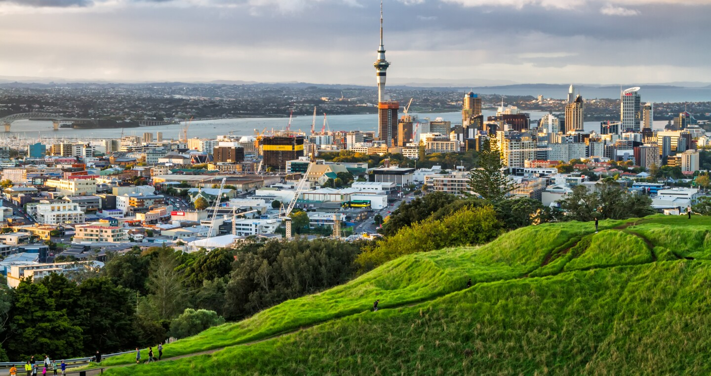
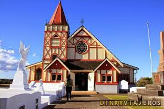
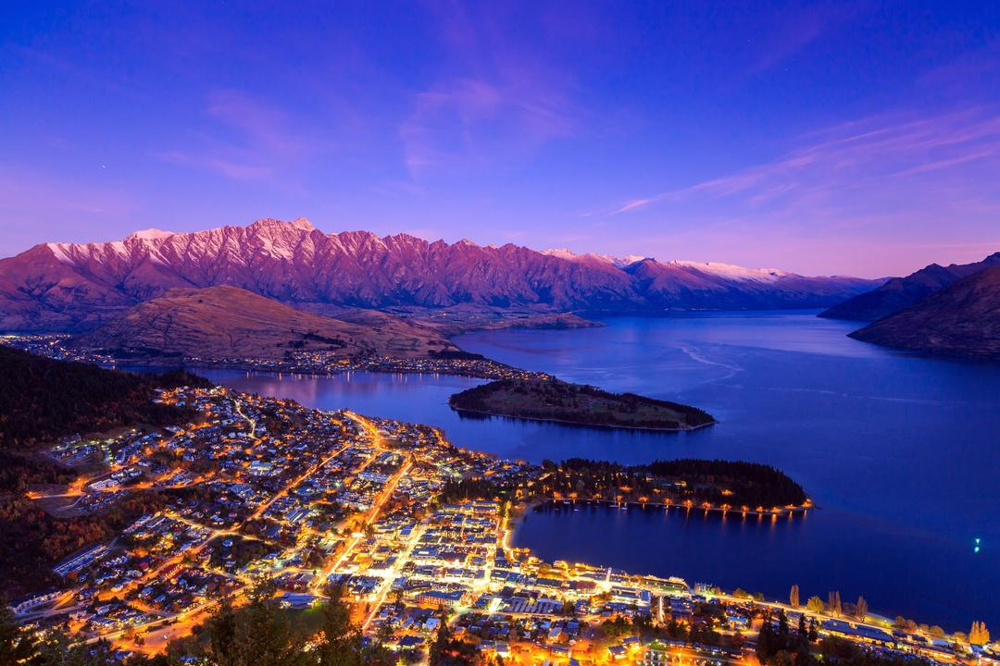
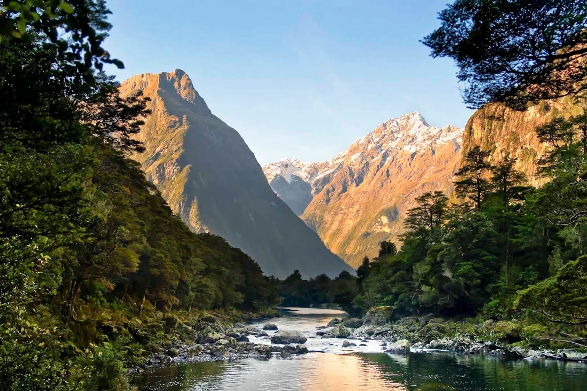
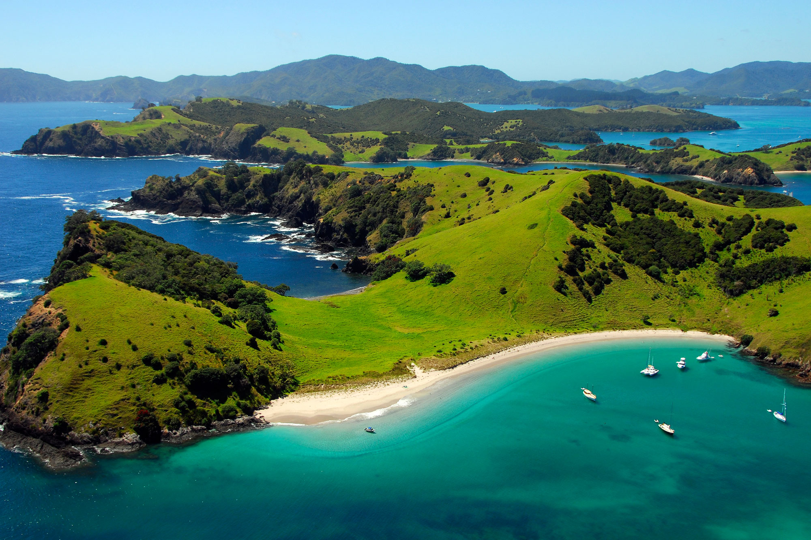
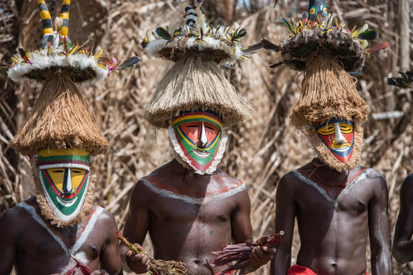
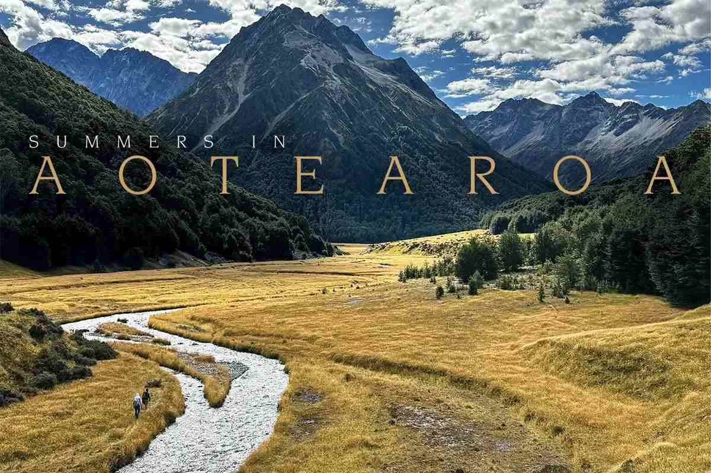
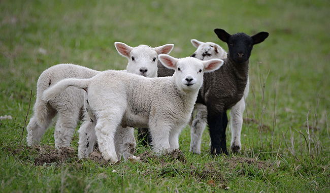

Descripcion del pais
Nueva Zelanda, oficialmente conocida como Aotearoa en maorí, es un país insular en el suroeste del Pacífico, compuesto principalmente por dos islas principales: la Isla Norte y la Isla Sur. Wellington es la capital, mientras que Auckland es la ciudad más grande y un importante centro económico. Nueva Zelanda es conocida por su impresionante diversidad geográfica, que incluye montañas, playas, glaciares y bosques tropicales. El país es famoso por su cultura maorí, sus esfuerzos en la conservación de la naturaleza, y por ser el escenario de las películas de "El Señor de los Anillos". El inglés y el maorí son los idiomas oficiales, y la nación destaca por su estilo de vida tranquilo, su alta calidad de vida, y su dedicación a la sostenibilidad.
5 lugares para ir de vacaciones
1. Auckland
Auckland, la ciudad más grande de Nueva Zelanda, es un vibrante centro urbano rodeado por agua, con una mezcla de cultura maorí, europea y del Pacífico. La Sky Tower es un icono de la ciudad, ofreciendo vistas panorámicas impresionantes. Auckland también es conocida por sus hermosas playas, viñedos en la cercana Isla Waiheke, y la posibilidad de explorar volcanes inactivos como el Monte Eden. Es un punto de partida ideal para conocer otras partes del país.
2. Rotorua
Rotorua es famosa por su actividad geotérmica y su rica cultura maorí. Los visitantes pueden ver géiseres, fuentes termales y piscinas de barro burbujeante en lugares como Te Puia y Wai-O-Tapu. Rotorua también ofrece experiencias culturales únicas, como espectáculos de haka y cenas hangi, donde los alimentos se cocinan en un horno subterráneo tradicional. Los amantes de la aventura pueden disfrutar de senderismo, ciclismo de montaña y rafting en el área.
3. Queenstown
Queenstown, ubicada en la Isla Sur, es la capital mundial de los deportes de aventura. Rodeada de montañas y el lago Wakatipu, la ciudad ofrece actividades como bungee jumping, paracaidismo, esquí, snowboard y paseos en lancha rápida. Además de la adrenalina, Queenstown es conocida por sus viñedos, especialmente en la cercana región de Central Otago, famosa por su Pinot Noir. También es un punto de partida para explorar el impresionante Fiordland y el Parque Nacional de los Glaciares.
4. Parque Nacional de Fiordland
El Parque Nacional de Fiordland, en la esquina suroeste de la Isla Sur, es una de las áreas más impresionantes y remotas de Nueva Zelanda. Hogar de los famosos fiordos Milford Sound y Doubtful Sound, este parque ofrece paisajes espectaculares con montañas escarpadas, cascadas y vida silvestre diversa. Es un lugar ideal para hacer senderismo, paseos en bote y explorar cuevas de luciérnagas. El Milford Track es uno de los senderos más famosos y escénicos del país.
5. Bay of Islands
La Bahía de las Islas, en la región norte de la Isla Norte, es un paraíso para los amantes del mar y la historia. Con más de 140 islas, la zona ofrece excelentes oportunidades para practicar la navegación, la pesca, el buceo y el kayak. La ciudad histórica de Russell, la primera capital de Nueva Zelanda, y Waitangi, donde se firmó el Tratado de Waitangi en 1840, son lugares de gran importancia cultural. Las playas de arena blanca y las aguas cristalinas hacen de la Bahía de las Islas un destino vacacional perfecto.
Datos curiosos
1. El País Sin Serpientes
Nueva Zelanda es notable por no tener serpientes nativas. Esto es bastante inusual, ya que la mayoría de los países tienen al menos algunas especies de serpientes. El gobierno de Nueva Zelanda toma medidas estrictas para asegurarse de que las serpientes no entren en el país, lo que convierte a Nueva Zelanda en un lugar seguro para los excursionistas y campistas que no quieren preocuparse por estos reptiles.
2. Tierra de la Larga Nube Blanca
El nombre maorí de Nueva Zelanda, Aotearoa, se traduce comúnmente como "La tierra de la larga nube blanca". Este nombre poético refleja la belleza natural del país, que los primeros exploradores maoríes vieron cuando se acercaban por primera vez a las costas de Nueva Zelanda, notando las largas nubes que se extendían sobre las islas.
3. Más Ovejas que Personas
Nueva Zelanda es famosa por tener muchas más ovejas que personas. Con una población humana de aproximadamente 5 millones, el país tiene cerca de 10 ovejas por cada persona. La ganadería ovina es una parte importante de la economía de Nueva Zelanda, produciendo lana y carne que se exporta a todo el mundo.
Quiz
¡Prueba tus conocimientos con este Quiz!
Gracias por participar
Tu puntaje fue: